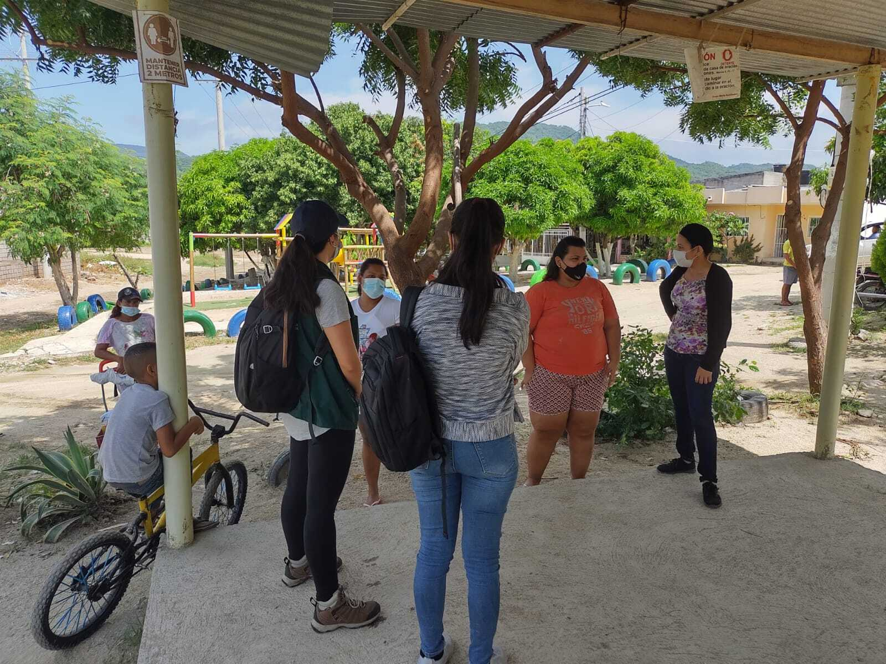

Rapid Ethnographic Assessments
Practical guidance for researchers and practitioners on how to plan and conduct Rapid Ethnographic Assessment to gather insights on specific communities, issues, or environments within short time frames through flexible, participatory approaches.

- Rapid Ethnographic Assessments allow researchers to gather insights on specific communities, issues, or environments within short time frames.
- REAs prioritize flexibility, triangulation using multiple data sources, and collaboration with local stakeholders to ensure findings are both accurate and relevant.
What is a Rapid Ethnographic Assessment?
Rapid Ethnographic Assessments (REA) are a qualitative research method that allows researchers to collect information efficiently for decision-making. This methodology has several key features1:
- Conduct participant observations: To approach the internal perspective of individuals in specific situations, from everyday life and the researcher’s own experiences during events.
- Use of field notes: To condense the preliminary results from various data collection techniques such as focus groups, interviews, and observations. These field notes include dense descriptions and reflective statements documenting the fieldwork, along with personal reflections.
- Establish relationships with the community or participants: REA builds on the premise that researchers can obtain extensive and in-depth information through short, intensive and participatory fieldwork with the community. This participatory aspect ensures active engagement and involvement.
- Seek social and cultural relationships within a group of people: REA emphasizes on understanding individual daily activities and group’s culture, norms, activities, and social relations. In contrast to classic approaches, it offers a more specific focus, a shorter duration, and limited scope.
- Holistic approach to the topics studied: Conducting an REA allows researchers to connect qualitative data collection techniques and other available data sources to generate insights efficiently. Researchers obtain these insights through their interpretations. REA focuses not on objectivity but on identifying high-quality relationships among people, stories, and events mapped in the field.
These principles have their roots in classical ethnography, which aims to understand a problem or situation from the “insider’s” or “subject’s perspective.” Unlike classical ethnographies that involve extensive time—months or years—in the field, researchers execute Rapid Ethnographic Assessments in a short period and aim to tell decision-makers timely. Some authors suggest conducting REA over four to six weeks.2
With rapid ethnographies, researchers collect information mainly through qualitative techniques, such as interviews, focus groups, and observations. However, researchers can also use quantitative techniques, such as available data and short surveys, to support answers to research questions.3 To achieve relevant insights, REAs feature triangulation of results, consolidation of multidisciplinary teams, and iterative learning processes.4 Combining multiple techniques positions rapid ethnography as a tool that provides findings and recommendations based on detailed, culturally relevant information reflecting local realities.
When to consider doing a REA?
REAs are particularly useful when practical and actionable recommendations are needed within short time frames. While this methodology has great potential, the rapid collection and processing mean that REA findings are exploratory. Their scope focuses on identifying findings from particular contexts rather than generating generalizable knowledge. REA is especially useful when:
More information is needed about an emerging problem or situation with little existing knowledge: Rapid ethnographies can provide descriptive information about complex problems, helping to identify causes and design appropriate interventions.
Engagement with “hidden” or vulnerable populations is necessary: Some populations may be particularly closed and difficult to reach. Accessing these groups requires the support of trusted individuals within the community. Rapid ethnographies often seek to identify and involve these community leaders to facilitate contact and build trust during the research.
Community involvement is essential: Understanding how to address a problem requires the involvement of local community members. Involving the people who are directly affected by a problem often results in more practical and achievable recommendations for the program or intervention.
Below are three real-world applications of rapid ethnographic assessments:
After Hurricane Katrina, New Orleans experienced a demographic increase in the Latino population, particularly among single, undocumented men. Researchers suspected an emerging pattern of crack use among this population but needed more information to formulate responses. The REA results revealed how contextual factors such as a growing drug market, coupled with social isolation and victimization of the undocumented Latino population, led to the initiation and increase in crack use among a group that previously had relatively low drug use.
Accessing vulnerable migrant and refugee populations presents challenges due to stigmatization from irregular migratory status, lack of documentation, and distrust toward state institutions. Rapid ethnographies enabled strategic approaches with community leaders and migrant organizations within local communities. Their involvement proved fundamental in building community trust and accessing the target population, making participants feel included and valued in the process.5
Between November 2020 and January 2021, during the COVID-19 pandemic, researchers conducted a REA in Dhaka, Bangladesh. They used in-depth interviews and participant observations to explore health-related beliefs and practices. The REA revealed a gap between scientific explanations of COVID-19 and the community’s cultural and spiritual beliefs, such as the perception of the virus as a disease of the rich and sinners, leading many to reject biosecurity measures. These findings highlighted the need for deeper understanding of community perceptions to improve public health policy effectiveness.6
Planning a REA
- Assess the relevance of the methodology
Before starting a rapid ethnographic assessment, it is crucial to determine if this methodology is suitable for your research objectives. Consider the following questions:
- Does the research require in-depth, qualitative insights within a short timeframe? Rapid ethnographies are designed to provide timely, actionable data.
- Are there specific cultural or social dynamics that need to be understood quickly? This method is particularly useful for exploring complex social interactions and cultural contexts.
- Is there a need for participatory engagement with the community? Rapid ethnographies emphasize active involvement and collaboration with community members.
- Are the necessary resources and expertise available? Ensure that your team has the skills and tools required to conduct qualitative research effectively.
If the answers to these questions align with your research needs, rapid ethnography may be an appropriate choice. The data produced during REA is gathered through a combination of various data collection techniques. The information and resources obtained from these techniques can be presented in a variety of formats. This interactive process involves the use of:
- Audio recordings from interviews and focus groups
- Photographs and videos taken during observation activities
- Texts resulting from note-taking during activities
- Other resources such as maps or drawings provided by the community
The mechanism of interaction between resources and the process on how that information contributes to generate insights depends on the scope of research questions and the strategy designed by the researcher to address rich information with time constraints.
- Additional considerations for conducting a REA
- Duration: Although there is no set rule on how much time is sufficient to conduct it, most experts agree that the time spent in the field collecting data should be between two and six weeks.7 The speed of data collection will depend on research objectives, funding, and team technical expertise. Remember that a key aspect of rapid ethnographies is to produce actionable and timely data for decision-makers. If the timeline is not feasible and available funding is limited, another method may be more appropriate. Key questions to consider include: When are the findings needed? Can the timeline be met? Are the necessary technical and financial resources available?
- Ethical considerations: Ensure that appropriate IRB permits and certifications are in place if required. This measure ensures that the research will not harm people and communities due to the project’s processes or findings.
- Data collection techniques: Identify data collection techniques that will be prioritized Here, consider the information you want to collect and consult the practical guidelines for focus groups, interviews, and observations, as these are the most common collection techniques in REA. However, depending on the research needs and the research team’s experience, other collection techniques such as ethnographic mapping or short surveys can be implemented (For detailed data collection techniques used in rapid ethnographies, see Annex 1).
- Structure your team
When structuring your team, carefully consider who will make up an effective and productive team. Take into account the experience required for each role and ensure that team members are well-suited to the tasks they will perform in the field. To achieve this, define who will be in the field and the characteristics that each team member should have. The best multidisciplinary teams comprise people with complementary skills and technical or subject matter expertise. In addition, teamwork has been identified as beneficial, as it facilitates the development of ethnographic research from different points of view, often integrating knowledge from various fields, areas, or topics.8 Three essential elements of a strong team are (i) expertise in qualitative methods, (ii) expertise in content or topics, and (iii) expertise in the local context.9
There should be at least one person on the project team with experience in qualitative research methods. This person should be responsible for helping to keep the project on track by monitoring the quality of the data collected and training team members when necessary. This role will facilitate learning from participants due to their ethnographic orientation and sensitivity to the project.10
It is also highly recommended to have people with thematic expertise and actively involve stakeholders. Thematic experts could guide the research team in understanding the findings nuances and connecting it with literature, as well as provide institutional context, depending on the study topic. In turn, stakeholders can act as advisors throughout the study, ensuring relevance and facilitating the incorporation of findings into practical changes.11
In addition, the team should include people who are closely involved on a daily basis with the problem or phenomenon under study. These are usually people from the local community or target population. These people are sometimes called “cultural experts.” They should be a trusted person who can help facilitate access and interaction with hard-to-reach populations and provide information on how things are organized within their community.12
Finally, assign roles and functions to each team member. Before starting the collection, define the roles and functions of the field team. Some key roles and functions must be assigned to achieve the proposed objectives. To do this, make a role assignment matrix to organize the tasks of contacting or scheduling participants, logistics of access to the territory, information collection, data flow closure, and analysis.
- Recognize the skills of the field team13
The quality of data produced during qualitative research activities is closely related to the skills of the moderator and facilitator. These competencies, outlined in Table 1, enable teams to recognize and adequately represent the diversity within qualitative data.
While these skills are typically developed through years of study and practice, field teams often consist of individuals from multidisciplinary backgrounds with varying levels of experience. Regardless of experience level, it is important to review and discuss these skills with your team to identify possible gaps and opportunities for improvement.
Currently, there are no standardized metrics to measure the prevalence of these skills among qualitative fieldwork moderators. Therefore, the skills in Table 1 should be viewed as a resource for reference and reflection for teams.
Ensuring that everyone on the team understands how these competencies contribute to effectively engaging with the population is essential for collecting high-quality information.
| Ability | Description | Why is this skill important? |
|---|---|---|
| Cognitive empathy | The field team’s ability to understand and communicate participants’ situations from their perspectives, understanding how they see the world and their roles within | Allows researchers to connect more deeply with participant’s realities and experiences. Helps to create a relationship of trust and respect with the participants. Seeks to avoid generalizations and stereotypes that may arise from preconceptions or external influences such as previous studies. Enhances understanding of participants’ situations without resorting to pity. |
| Follow-up | The field team’s ability to recognize when additional information is needed to answer the questions initially posed and those that arise during the research process. This ability implies curiosity and a willingness to explore new issues or doubts that emerge as data collection progresses. | Increases the quality and robustness of data by allowing a more detailed exploration of the studied phenomenon. Contributes to obtaining deeper responses from participants. Enables exploration of emerging themes during data collection. Helps in detecting and validating patterns observed in the field. |
| Self-awareness and reflexivity | The field team’s ability to continuously reflect on how their presence, background, and assumptions influence data collection, interpretation, and analysis. This ongoing self-reflection ensures that the qualitative field team is mindful of its impact on the research process and the participants. | Helps maintain ethics in the researcher-participant relationship. Facilitates understanding of personal limitations in connecting with participants. Aids in developing strategies to overcome communication barriers and create an environment where participants feel comfortable sharing sensitive information. |
| Heterogeneity | The field team’s ability to represent and reflect the diversity within the group being studied. This skill involves recognizing and documenting the differences and variations among individuals or subgroups during qualitative research, typically applied during the data analysis phase. | Contributes to challenging generalized and simplistic patterns. Ensures that data reflect both common and atypical experiences. Demonstrates the field team’s ability to identify, recognize, and document heterogeneity in the population studied. |
| Palpability | The field team’s ability to provide detailed descriptions in their field notes or diaries, making the data tangible and clear. This involves avoiding abstract descriptions and, instead, offering vivid accounts that allow the research team to visualize and understand participants’ experiences and contexts. | The palpable field notes and diaries are accompanied by textual quotations, images, or other audiovisual resources that show events, situations, and actors that support the research findings. Reliable findings are supported by specific details that clearly depict the events and situations studied. Helps to avoid abstraction in the data, grounding conclusions in concrete evidence. |
- Plan logistics activities
Contact allies, leaders, and key actors: Engage with local partners to understand contextual factors, convene participants, and coordinate logistics. Local partners can facilitate data collection.
Make a schedule defining the field collection activities:: Define all field collection activities, the total number of tasks to be completed, and the time available; Share the schedule with allies and key stakeholders to; Confirm participant availability on the selected dates; Identify locations where activities will take place.; Ensure there are no conflicting events in the community; Use visual tools such as a Gantt chart for developing the schedule.
Verify the location and conditions of the places where the collection activities will take place: Identify safe locations that facilitate interaction with the community. Work with local community organizations and leaders if possible. Gather general field information and visit the community with someone locally trusted to establish rapport and familiarize yourself with the area.
Ensure the safety of the field team: Conduct a thorough risk assessment during the planning phase. Prioritize the safety of both the field team and the community to minimize risks.
Ensure that you have all the necessary materials to carry out the activities: Prepare incentives for participants (if applicable). Arrange refreshments, stationery, attendance lists, informed consents (if applicable), recording equipment, photographic equipment, batteries, etc.
A field collection activity lasts, on average, two to three hours. Therefore, a maximum of two activities per day is recommended. This ensures data quality, does not exhaust the field team or the community, and avoids losing focus due to fatigue or saturation. In addition, the schedule of activities should include the time allocated by the team to:
- Travel or transport to the collection sites
- Collect data
- Take notes
- Refine the field notes and integrate other resources generated
- Plan to ensure effective fieldwork and secure storage of gathered information
In addition to logistical planning, the team must decide how to handle the collection and secure management of data to ensure its quality and facilitate its subsequent systematization. To this end:
Define who will lead data collection and reception within the team: One person should lead the instrument design, data collection, resources reception (based on fieldwork results), and analysis. Ideally, this person should have experience applying qualitative research methods and be involved in fieldwork and data collection. This person’s involvement in the project’s different stages will make it easier to manage the information collected and ensure the integration of the various sources and resources.
Define a note-taking strategy for the different activities: Note-taking is essential across all data collection activities in REA, even if recordings are available. The team leader should agree with the team on things like the format that everyone will use for their note-taking, critical aspects that require more or less attention from the team to address in the notes, types of formats that could complement the notes (photographs, videos, maps, etc.), and the dates for intermediate and final results. Overall, Having a common understanding of these processes will ensure the smooth flow of data collection and a clear scope of each role within the team.
Study the instruments, scripts, and practical guides provided to ensure data quality during data collection: Before fieldwork, all team members should familiarize themselves with the characteristics of the instruments and the type of notes and supplementary resources to be generated in each case. Use the practical guides provided to prepare accordingly for the prioritized techniques.
Conducting a REA
Start by establishing a periodic check-in meetings with the team. During fieldwork, the team should meet periodically to share insights and determine if adjustments are needed for upcoming activities. These debriefing sessions are a key component of rapid ethnography and should be scheduled to ensure they are not overlooked. Some guiding Questions for Check-Ins include:
Were there any unexpected or stressful events?
How well did you perform as an interviewer, moderator, observer, or note-taker?
What kind of data did you collect?
Are there any gaps that need follow-up?
What adjustments would you make to the data collection guides or techniques?
Are there new sites or contexts that need observation?
Take notes during these meetings to track follow-up actions. These sessions are also a chance to discuss the project’s progress, address logistical challenges, and provide team members with training or advice on collection techniques.
Due to time constraints, it’s tempting to skip check-ins or leave discussions for after fieldwork is complete—this is a mistake!
Sharing information in a group setting improves the quality of data collection and subsequent analysis. Make sure blocks of time are scheduled in advance for these meetings.
Potential challenges during check-in meetings and fieldwork development
There are situations that could take place while checking-in with your field team that you should be prepared for. Here are some examples:
| Challenge | Possible solutions |
|---|---|
| One team member usually dominates the conversation during debriefing meetings | Emphasize the importance of teamwork during training. Rotate facilitators for check-in meetings to give everyone a chance to lead and ensure balanced participation. Foster an environment where each team member shares their insights. |
| Field teams may encounter challenges in implementing reflexivity practices when conducting REAs | Encourage ongoing communication about biases that may influence data interpretation. Adapt meeting formats to fit fieldwork dynamics. Use flexible field diaries to document biases while accommodating the pace and nature of the research. |
| There is an evident lack of consistency in collecting information among the field team14 | Implement standardized data collection tools and provide clear instructions on using them. During training, discuss the context of the REA and emphasize shared best practices for approaching unstructured situations. |
| Some team members need to pay more attention to the ethical aspects of the research | Accelerated timelines can lead to ethical lapses. Emphasize the importance of ethical practices during training and ensure that all team members understand how to uphold ethical standards to protect participants and maintain data integrity.15 |
| Team members say they are uncomfortable with the activities they witness | Discuss potential uncomfortable situations during training so that team members are prepared. If discomfort arises in the field, reassign less sensitive tasks to the team member and ensure they can perform their role without bias. Some team members may be unsuitable for certain projects due to personal beliefs or values. |
| Some team members are trained and oriented quantitatively and unfamiliar with REAs and qualitative methods | Provide thorough training on qualitative methods and the specific REA protocols. Ensure that all team members understand their roles in data collection, including note-taking and techniques. Rotate tasks to allow everyone to gain hands-on experience in different aspects of the REA process. |
After a REA
After data collection is complete, the team will have multiple sources of information, resources, and data from the research activities conducted in the field. To ensure proper management of these data, the following steps are suggested:
- After each data collection journey, each team member must ensure secure data collection storage according to the protocols for developing human subject research defined for the project. This includes: (i) transfer all recordings, photographs, and audiovisual material to the designated folders or storage platforms; (ii) Name files according to protocol; (iii) Anonymize and encrypt sensitive material to protect participants’ privacy.
The lack of initial documentation products jeopardizes all the information processing components and, therefore, the data quality obtained.
- Field notes are the primary data source for rapid ethnographies, so it is crucial to write and expand them as soon as possible, ideally within 24 hours of collection. To do this, integrate complementary material and resources, such as photographs, videos, maps, drawings, field diaries, etc., into the field notes, according to the protocols and quality criteria agreed upon with the team in the planning phase. Standardizing this process will save time during the systematization phases, prevent data loss, and facilitate the project leader’s review of the information.
Use of photographic material Photographs are excellent complements to field notes. While they don’t need to be technically perfect, their primary function is to document key details and provide contextual information. However, always follow ethical guidelines to ensure participants’ safety and confidentiality before taking photographs.
Digital Ethnographies
The internet and digital technologies have accelerated the way people live, work, and relate to each other. In response to this social phenomenon, digital ethnography has emerged, a method that studies how people behave and interact in virtual environments, creating communities in digital spaces.16
Digital ethnography adapts traditional ethnographic research techniques to studying online cultures and communities formed through communications mediated by a computer or mobile device. Instead of physically being in a community, researchers immerse themselves in online communities, forums, and social networking platforms. This way, the digital ethnographer observes and analyzes how individuals interact in these virtual spaces.17
Techniques commonly used in digital ethnography are participant and non-participant observation, interviews, focus groups, and short surveys. To conduct a digital ethnography, follow the steps described above for performing a rapid ethnography. In addition, these considerations will be useful when adapting this method to a digital environment.18
| Challenges | Description | Solutions and recommendations |
|---|---|---|
| Ethical concerns: Informed consent | Obtaining informed consent from online participants can be challenging. | Whenever possible, contact participants and share and socialize the informed consent. Some platforms may have specific terms of service, but it is essential to ensure that participants understand the research and agree to participate voluntarily. |
| Ethical concerns: anonymity and privacy | Protecting the privacy and anonymity of participants in virtual environments is becoming more complex. | Some platforms may have specific terms of service and data processing. Please review these terms. Researchers should tell participants if they intend to share information so that appropriate measures can be taken and the risk of participant identification minimized if the participant does not wish to be identified. |
| Digital divide: Disparities in access | Not everyone can access the internet or digital devices equally. | Be mindful of access gaps that may lead to a biased sample, excluding certain demographic groups and limiting the generalizability of the findings. |
| Digital divide: Low digital literacy | Participants may have no or low skills in handling technological devices, which may affect their online behaviors. | These differences should be considered when presenting findings during the data analysis and interpretation phases. When using WhatsApp, use the application’s various resources, such as voice notes, images, videos, and stickers, to convey information accurately, directly, and responsively to users with these difficulties. |
| Data quality and authenticity: Incorrect representation | Participants may present themselves differently online, creating a potential gap between their online persona and offline identity. | Note that automated accounts, trolls, and fake profiles can complicate data interpretation and introduce biased information into the analysis. Always be aware of the potential for misrepresentation in digital environments. |
| Low participation: Interaction at problematic times | Participants may need help participating in the activities due to schedule conflicts or lack of time availability. | Conduct baseline surveys to identify the schedules that best meet the population’s needs. From the beginning, underline clear rules about desirable times to receive messages. |
| Low participation: Lack of trust | Participants may be distrustful of being artificially linked to virtual communities. | Make prior contact with participants before linking them to virtual spaces to introduce them to the organization. Present again the purpose of the research. Sometimes, participants do not complete the informed consent form. |
| Interpretation: Difficulty in interpreting content | Messages shared by participants may present an interpretive challenge for the researcher, as the tone of the message is attributed by the reader. | Actively moderate to ask counter-questions to clarify the message. Promote clear communication in written messages. Record questions arising from participation in virtual scenarios from participant interactions in your field diary or field note. |
A Practical Guide for Conducting Ethnographies
Footnotes
Palazzo, L., Figueroa Gray, M., Pullmann, M., & Lewis, C. C. (2023). Rapid ethnographic assessment: A toolkit for essential partner perspectives on short timelines.↩︎
Sangaramoorthy, T., & Kroeger, K. (2020). Rapid ethnographic assessments: A practical approach and toolkit for collaborative community research.↩︎
Palazzo, L., Figueroa Gray, M., Pullmann, M., & Lewis, C. C. (2023). Rapid ethnographic assessment: A toolkit for essential partner perspectives on short timelines; Sangaramoorthy, T., & Kroeger, K. (2020). Rapid ethnographic assessments: A practical approach and toolkit for collaborative community research.↩︎
Palazzo, L., Figueroa Gray, M., Pullmann, M., & Lewis, C. C. (2023). Rapid ethnographic assessment: A toolkit for essential partner perspectives on short timelines.↩︎
Lesmes Guerrero, N., & Rojas, A. (2022). The role of leaders in the regularization process of Venezuelan migrants in Colombia.↩︎
Akhter, S., Bashar, F., & Kamruzzaman, M. (2022). A rapid ethnographic assessment of cultural and social perceptions and practices about COVID-19 in Bangladesh: What the policymakers and program planners should know. Qualitative Health Research.↩︎
Sangaramoorthy, T., & Kroeger, K. (2020). Rapid ethnographic assessments: A practical approach and toolkit for collaborative community research.↩︎
Vindrola-Padros, C. (2021). Rapid ethnographies: A practical guide. Cambridge University Press.↩︎
Sangaramoorthy, T., & Kroeger, K. (2020). Rapid ethnographic assessments: A practical approach and toolkit for collaborative community research.↩︎
Palazzo, L., Figueroa Gray, M., Pullmann, M., & Lewis, C. C. (2023). Rapid ethnographic assessment: A toolkit for essential partner perspectives on short timelines.↩︎
Vindrola-Padros, C. (2021). Rapid ethnographies: A practical guide. Cambridge University Press.↩︎
Trotter, R. T., Needle, R. H., Goosby, E., Bates, C., & Singer, M. (2001). A methodological model for rapid assessment, response, and evaluation: The RARE program in public health. Field Methods, 13(2), 137-159.↩︎
Small, M. L., & McCrory, J. (2022). Qualitative literacy: A guide to evaluating ethnography and interview research.↩︎
Vindrola-Padros, C. (2021). Rapid ethnographies: A practical guide. Cambridge University Press.↩︎
Sangaramoorthy, T., & Kroeger, K. (2020). Rapid ethnographic assessments: A practical approach and toolkit for collaborative community research.↩︎
Kozinets, R. (2015). Netnography: Seeking understanding in a networked communication society. https://doi.org/10.1002/9781118767771.wbiedcs067↩︎
QuestionPro. (2024, July 9). Digital ethnography: What it is, advantages and tools.↩︎
Estella, A. (2024). Digital ethnography: A methodological monograph; QuestionPro. (2024, July 9). Digital ethnography: What it is, advantages and tools; Mosquera, M. A. (2008). From anthropological ethnography to virtual ethnography: Study of social relations mediated by the Internet. Fermentum: Revista Venezolana de Sociología y Antropología, 18(53), 532-549.↩︎